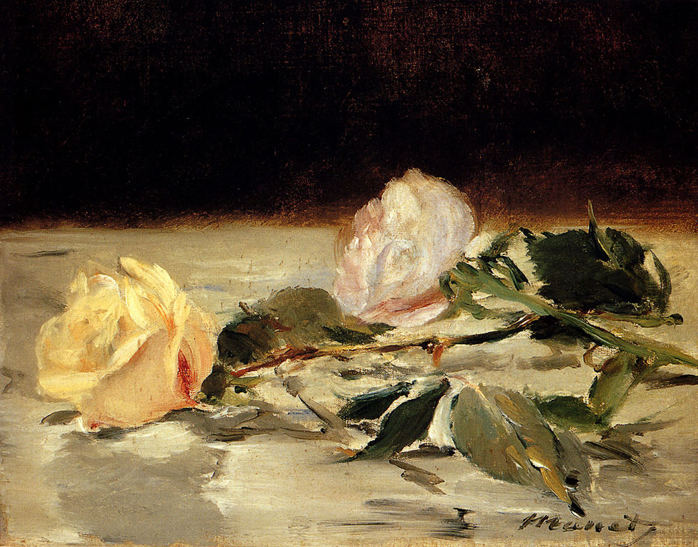
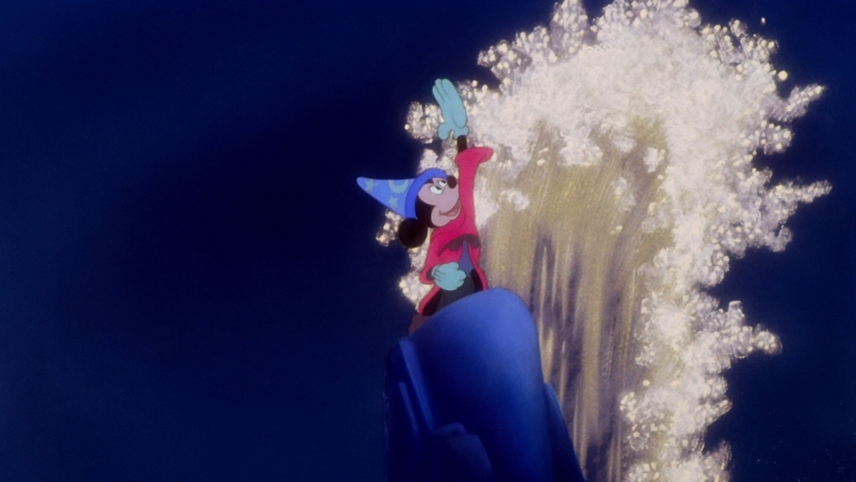
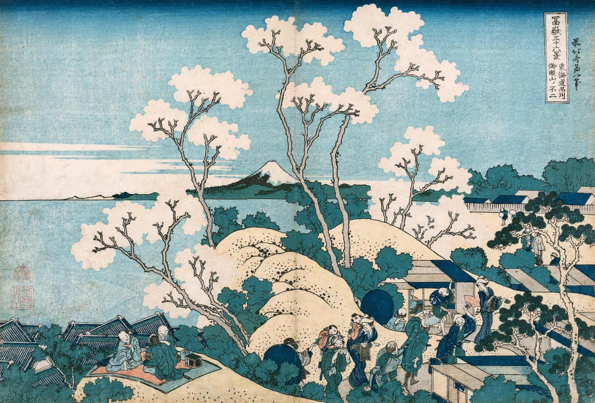

Passionate and inspired, I am master's student at Tufts University. With a love of art, design, and technology, I aspire to be an innovator.
In my M.S. I focus in innovation and mangement. I aspire to be an early life cycle, HCI, and ideation engineer, manager.



With a focus on Romantic Art & Philosophy, I studied Philosophy,
Computer Science, International Literary & Visual Studies, and Studio Art.
Inspired by Japanese & German Visual Art, I am excited by the impact of artistic movements. As a computer scientist, I am urged to rethink the way humanity interacts with art and technology.